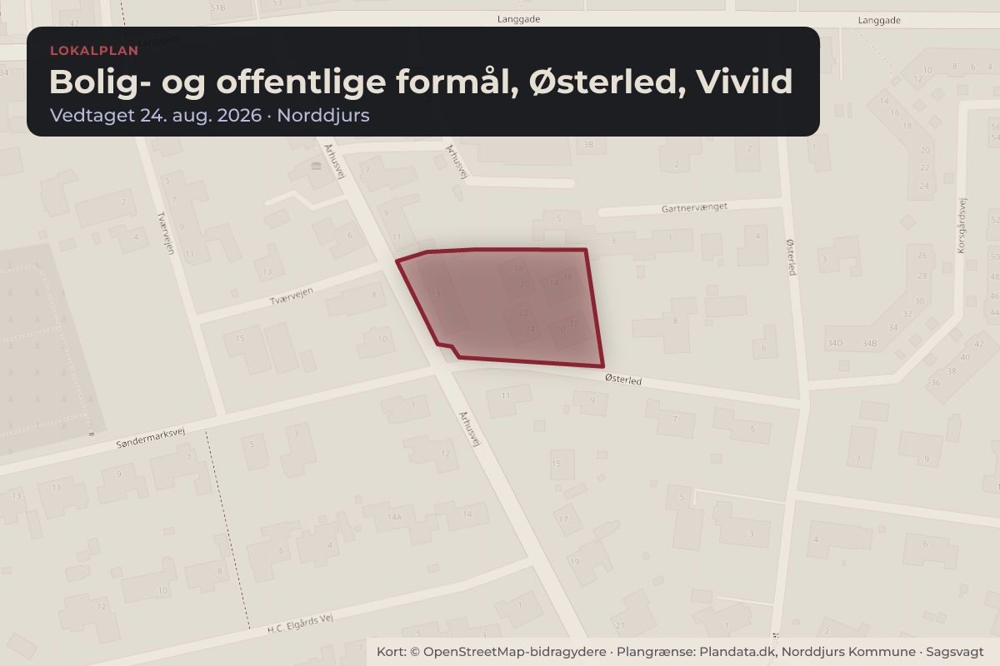
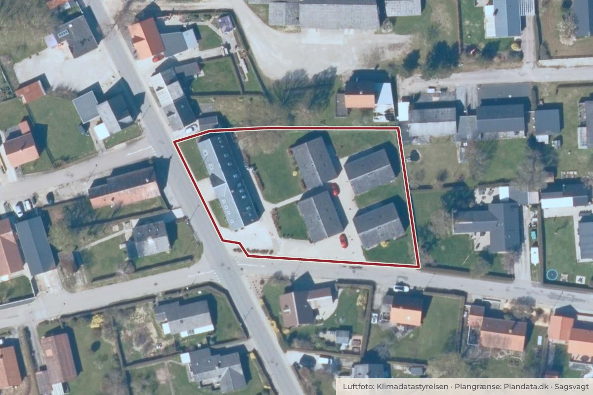

Besluttet 24. august, Natur-, Miljø- og Teknikudvalget, Norddjurs
Endelig vedtagelse af Lokalplan 133-707 Bolig- og offentlige formål, Østerled, Vivild

Kort: © OpenStreetMap-bidragydere. Plangrænse: Plandata.dk, Norddjurs Kommune.

Kort fortalt
- Hvem
- Natur-, Miljø- og Teknikudvalget, Norddjurs Kommune
- Hvornår
- Mandag 24. august 2026
- Status
- Besluttet. Godkendt.
Er noget forkert her? Skriv til os
Læs hele sagen Kommunens egen tekst
Sagsfremstilling
Forslag til Lokalplan nr. 133-707 - Bolig- og offentlige formål, Østerled, Vivild blev vedtaget af
Kommunalbestyrelsen den 21. april 2026 og har været fremlagt i offentlig høring i perioden fra den
28. april 2026 til den 26. maj 2026.
Natur-, Miljø- og Teknikudvalget er bemyndiget til at vedtage Lokalplan nr. 133-707 endeligt efter
offentlighedsperioden. Der skal tages stilling til endelig vedtagelse og offentlig bekendtgørelse af
Lokalplan nr. 133-707.
Lokalplanens indhold
Lokalplanen giver mulighed for, at området kan anvendes til boligformål, offentlige formål som
f.eks. kulturel institution, borgerhus, mødested for dagpleje, udlevering af hjælpemidler, mindre
offentlig service samt ikke genegivende erhverv, som kan indpasses i området side om side med
boliger.
Lokalplanen sikrer blandt andet, at der ikke kan etableres væsentlig mere bebyggelse end der er i
dag. Eventuel etablering af nye boliger i delområde 2 forudsætter således, at den eksisterende
bebyggelse rives helt eller delvist ned.
Da det tidligere plejehjem er væsentlig for områdets bymiljø, sikrer lokalplanen, at bygningen bevares og kun kan om- eller tilbygges med respekt for den oprindelige byggestil og arkitektur.
Nedrivning og ændringer ud over dem, som lokalplanen giver mulighed for, kan kun ske med
Kommunalbestyrelsens særlige tilladelse.
Lokalplanen fastlægger desuden bestemmelser om bl.a. parkerings- og opholdsarealer og materiale
og farvevalg ved ny- eller ombygning.
Lokalplanforslaget er vedlagt.
Høringssvar
Der er i den offentlige høring indkommet fire høringssvar. Høringssvarene er vedlagt i forlængelse
af høringsnotatet. Høringssvarene omhandler:
Kirkebyggelinje
Salg
Areal til parkering og legeplads
Præcisering af anvendelsesbestemmelsen i lokalplanen.
I vedlagte høringsnotat er høringssvarene behandlet efter ovenstående emner, herunder
forvaltningens kommentarer. Forvaltningen vurderer, at de indkomne høringssvar ikke giver
anledning til ændringer af lokalplanens indhold.
Sammenhæng til andre politikker/strategier og fagområder
Der er sammenhæng til Kommuneplan 2025.
Økonomiske konsekvenser
Ingen økonomiske konsekvenser.
Lovgrundlag
Planloven.
Indstilling
Chefen for Plan, Byg og Miljø indstiller, at Lokalplan 133-707 vedtages endeligt.
Beslutning
Godkendt.
Bilag
Kilde: Norddjurs Kommune, Natur-, Miljø- og Teknikudvalget, referat fra mødet mandag 24. august 2026, punkt 5. Læs den originale sag hos kommunen.